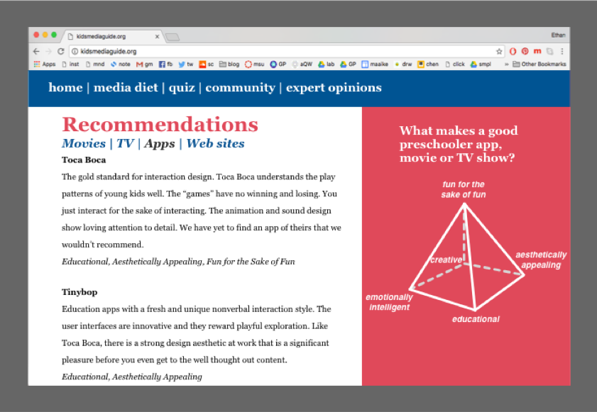

Kids-Media
A comprehensive & streamlined platform designed for parents to make informed choices about media & technology for their children
Role
Product Designer
Tasks
Product Conceptualization; UX Design & Research;
Instructional Design; Rapid Prototyping
Format
Responsive Web
Tools
Adobe Illustrator; Sublime
Problem
“Screen Addiction,” “Tech Zombies,” and even “Digital Heroin!” These are just some of the headlines that parents can find when searching online for advice on media usage for their young children. Evidence shows that excessive use of digital media negatively influences children’s physical & mental health (Lenhart, 2012; Strasburger et al., 2010). However, media literacy and prosocial uses of media may enhance knowledge, provide intellectual & creative benefits (Hogan & Strasburger, 2008; Hogan, 2012).
Technology changes quickly, generating a flood of information and opinion about its pros and cons. It is difficult for parents to keep track of it all, and to know which information to trust. There is no simple, easy way for parents to learn which media are helpful and which are harmful, how to use technology in the correct manner with their children, and how to give children a balanced diet of play with and without screens. Parents can refer to the food pyramid to inform children’s diets.
Parents have no shortage of information resources, but choosing and evaluating from among them all can be overwhelming. This points to a shortcoming of Common Sense Media: the sheer volume of information it contains makes it authoritative and comprehensive, but also daunting and overwhelming.

Discovery Phase
To get insights about what how parents make choices about media exposure and to learn about their current attitudes about technology for their young children, we conducted surveys & in-person interviews. The following were the questions that guided our initial phases of research:
- How much time do you allow your kids to use these media per day? Do you have any other rules for them?
- What concerns, if any, do you have about media usage for your kids?
- What benefits, if any, do you see from your kids' media usage?
- What information do you wish you had about this?
- What sources would you trust?
- Where do you currently receive information regarding your child(ren)'s media use?
- What is your age?
- What is your gender?
- What is your profession?
- What is your educational background?
- What is your marital status?
- Where do you live?
- What are the ages and genders of your children?
- What devices/services, if any, do you allow your kids to use? (i.e., Broadcast/Cable TV, iPads, YouTube, Netflix, apps, games)
Summary of Results
We mostly received responses from women aged 30-45 with children aged 0-12 years old. They allow media such as YouTube, cable, Netflix, Nickelodeon, PBS, PBS Kids, Sprout, photos, FaceTime, Pixar/Disney, Kindle Fire, music, and various apps and games (Stack the States, Math Bingo, Endless Alphabet, etc.). They limit their children’s media usage by time (1 hour per day), by the time of day (only at night or on the weekend), by content (educational only), or simply that the children can’t use the devices directly or without supervision.
Target Learners
The focus is on parents and caregivers of children aged 2 to 5 years who give their kids access to media in some capacity, whether it be television, tablets, phones, or computers. The target learners see some benefit to media usage for children but are concerned about its possible negative consequences. They are uncertain about what kinds of media to seek out, what to avoid, and what limits to set.
Learning Goals & Objectives
The main premise is that it is less a matter of how long children spend with media that matters, but rather what they are doing during that time, and how parents are interacting with them. The aim is to identify particularly beneficial apps, games, movies, and TV shows, and give suggestions for ways that parents can use media to support imaginative play, self-guided learning, and emotional development via co-viewing and the like. The design of this project takes the form of a recommended media “diet” akin to nutritional guidelines. Perhaps there should be a “tech pyramid” that gives parents the media equivalent in an accessible format.
Design Challenge
How might we design a solution that can serve as a one-stop-shop for parents who have to make informed choices about media & technology for their preschool children?
Design Solution
Kids-Media : A streamlined and curated website of information for parents trying to navigate the media landscape for their 2-5-year-old children. It includes relatable strategies and ideas, links to selected professional and academic resources, a quiz to evaluate their current knowledge, a forum, and a list of recommended titles for them to start with. It is organized according to the subject, and into small, easy-to-understand chunks, so that parents (our target learners) can look specifically at the area they are interested in at the moment.
Through the interactive learning platform, parents will be able to:
- Identify and employ appropriate strategies for their 2-5-year-old child’s media usage, including limits (both in time and space), and ways to enhance learning (including co-viewing/co-playing)
- Identify “quality” media for their 2-5-year-old child
- Understand the importance of media as a part of a healthy balanced experience, and understand what other activities are necessary for healthy development
The website has been structured on the following parameters which has been described in detail here:
- Not Only What Media You Use, But How You Use It
- Everyday “Diet” for Children for Healthy Growth and Development
- Quality, Not Quantity - What apps are “good” for preschoolers?
- How Do You Measure Up?
- Community Page: Speak to Others
- Learn Even More….
Here are the site mockups that were created to depict the design & structure of the website:
Strategies Page
Recommendations Page

Quiz Page
- The website has been designed as a reference work rather than a course.
- The quiz will give immediate feedback to parents depending on the choices they make while answering those questions.
- It will also include a platform for the community members to interact with each other so that they can discuss their ideas, thoughts, opinions, etc. about the kinds of apps, shows or games available for kids.
Personalized Design Process Model
Our Design Process Model which is grounded in the Agile Methodology is quite similar to the Dick & Carey Model.

However, this version reflects the continual reassessment and refinement of our goals and assumptions as the process went on. We begin by identifying the problem, the learners, and the instructional goals through research, both primary and secondary, and brainstorming. These three aspects of the design are refined as one dives deeper into the process. Additionally, they continually influence each other, which is why there are arrows between them. For example, in our project, as we learned more about our target learners (the “actual” learners- the full picture of a busy preschool parent), we were able to refine the learning goals to tailor to them.
This step is followed by the identification of potential solutions, and then by the development of the instruction strategy. Again, these are left somewhat open-ended, leaving the final decision to be made at the next stage: developing and selecting the instructional materials and developing the actual instruction strategy. Lastly, we have “develop and conduct the formative and summative evaluation.” Of course, this is left until we have something to actually test but has arrows back to most other areas of our process. This way, we can continue to iterate as we learn more about our product.
Evaluation Plan
The evaluation strategy is based on Rossi’s Five Domain Evaluation Model in which there are five domains in the model that are assessed – Needs, Theory, Implementation, Impact and Efficiency. Being a continuous iterative process, the assessment plan will be both formative and summative. Based on the following evaluation criteria, the product can be further improved:
For a detailed description of the project & references, please access the design document here.
Team Members : Jordana Gilman, Heena Gulati, Ethan Hein, Luyanran Ye
Supervised by: Maaike Bouwmeester